Free to forkNo licence and no copyright claim: build this game under your own name, or lift one idea from it. Why?
Game overview
AAL Stealth Sector is the board game Battleship rebuilt as a duel of deduction. Each side hides eight warships on a 15 by 25 grid, and instead of one blind shot per turn, every ship fires its own salvo shape, from a corvette's two-cell line to an obliterator's three-by-three bomb.
The ships take turns in a fixed order, smallest first, so you always know which salvo comes next and can plan for it. Every turn you can also slip one ship to a new position and use one piece of electronic warfare: a sensor probe, a mine, a smoke screen, a repair. The enemy can do all of it too, and nobody sees a ship until it's been destroyed.
It's a compact, mouse-driven web game in a neon vector style on a dark field, with a little synthwave in it, and a futuristic French flavor to its fleet.
Target audience
Players who love the suspense of Battleship and the logic of deduction puzzles like Minesweeper, but find the classic too slow and too much down to luck: one guess, one cell, and very little to decide.
They want a thinking game with real tension that fits a coffee break.
It's mouse only and turn-based, with no timers. Everything you need to decide is on the screen.
Game's purpose
Excitement: the suspense of an invisible fleet, and the moment a hull finally shows itself.
Understanding and mastery: reading heat signatures and working out where the rest of a ship must be.
Power: firepower that builds through every round, from a pinprick to a bomb.
It deliberately avoids draining rest (no clock, save after any turn) and fairness (the AI admiral knows only what its own hits have shown it).
Core concept
Classic Battleship gives you one blind shot a turn, and once the ships are placed there's nothing left to decide but where to guess.
Here every turn has three decisions: where to aim a salvo whose shape you knew was coming, which of your own ships to move out of danger, and which trick to play.
Luck still opens the search, but deduction and deception win the battle. Every item is in the kit from the first battle; there's nothing to unlock.
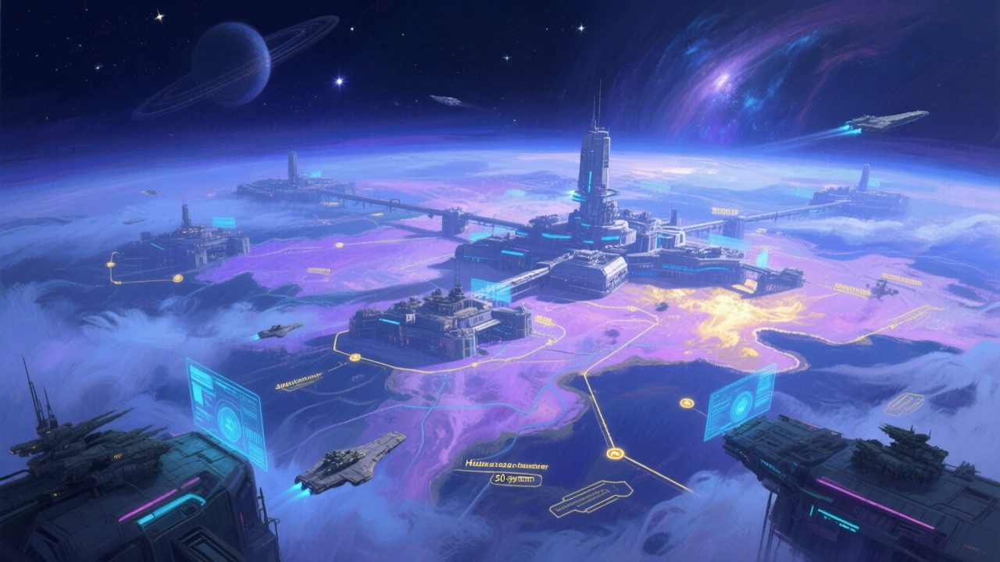
"Inside the Brume, sensors see nothing. A hull only shows itself when it burns."
Lore and story
The Brume
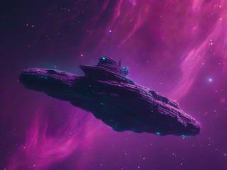
At the edge of colonized space lies a nebula the colonists call the Brume, the mist. Its charged dust drowns every sensor. A warship running cold inside it is invisible, even at point-blank range. The only thing that gives a hull away is heat, and the only thing that makes heat is being hit.
So battles in the Brume are fought blind. Fleets fire salvos of missiles at where they think the enemy is, watch for the glow of a hit, and work outward from it.
The same eight hulls, on both sides
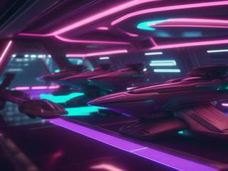
This is the era of the AAL Universe when the young colonies turned on each other for all the old reasons. Alteisen Arsenal Laboratories, the neutral arms maker that equips every side, sells one standard battle fleet: eight hulls, from corvette to obliterator, each built around one missile system.
The Lumière colonies bought theirs to guard their convoys, and dressed them in their own style: elegant lines, neon running lights, French names. The corsair admirals who raid those convoys bought exactly the same fleet. Every battle in the Brume is eight against eight, hull for hull. Only the admirals differ.
The corsairs
The corsairs are would-be warlords who would rather take than build. They hide their fleets in the Brume, strike at the convoys and slip back into the mist, betting that nobody can find them in there.
The job right now
You command a Lumière fleet. The colony has charted the corsairs' hideouts inside the Brume, and your orders are to go in after them, one hideout at a time, and teach them that the mist hides nobody for long.
Controls and interface
Your grid is on the left, the enemy's on the right. The whole game is played with the mouse, and every action answers with a quick, eased animation, so even a miss feels like it landed.
Aim and fire
Hover
A targeting reticle marks the cell under the pointer
Press
Lock the salvo's first cell, lit in full color
Drag
Pull up, down, left or right to lay the rest of the salvo along that way, shown in a dimmer color
Release
Fire. Firing ends your turn
Command
Click ship
Select one of your ships to move this turn
Click cell
Move it there, if the cells are free and in range
Item tray
Pick an item, then the cell to use it on
Esc
Pause and save
When the missiles land, each struck cell flares bright red and then cools to a scorched brown, so the board keeps a clear record of where you've already fired. A hit leaves a heat signature instead, glowing where part of a ship has been destroyed.
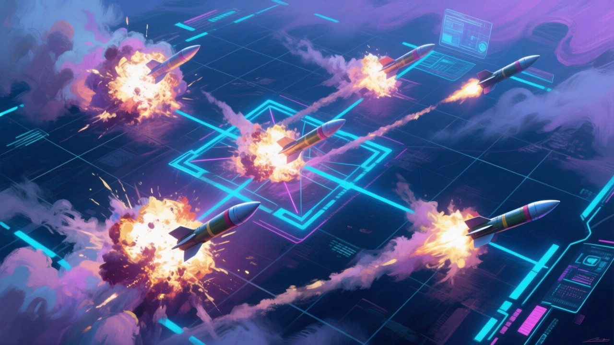
"Press on a cell, drag a direction and let go. Missiles that run off one edge of the grid come in from the other."
Game layers
01 · Moment-to-moment
One turn, three decisions
Every turn follows the same short rhythm. The move and the item are optional; the salvo always comes last.
MoveSlip one of your ships to free cells, out of a probe's sight or away from a wound
Use an itemProbe, mine, smoke or repair, on either grid
FireThe active ship's salvo, aimed by dragging
The best turns combine all three: hide the ship the enemy just found, drop a probe where your last salvo glowed, then fire along the line the probe lit up.
02 · Low metagame
One battle, eight against eight
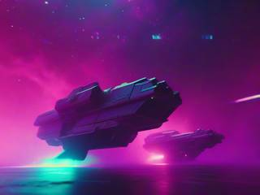
Both fleets are placed at random when the battle starts. The rotation runs from the corvette up to the obliterator and starts again, both admirals taking a turn in between.
A battle moves through phases. It opens as a search, with salvos sweeping empty space; the whole fleet fills only 45 of the grid's 375 cells. It tightens into a hunt the moment the first heat signature appears. It ends when one side's eight hulls have all gone dark.
03 · High metagame
The chart of the Brume
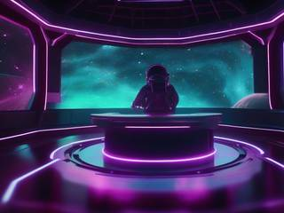
Battles are picked from a chart of the nebula, where every marked hideout is one battle. Each hideout has its own conditions: how much drifting debris clutters the grids, which items both fleets carry, which side opens fire.
The chart remembers. A cleared hideout stays cleared and its marker turns to the colony's colors, so the chart slowly becomes a picture of your campaign. A lost battle takes nothing from you: that hideout simply stays on the chart. And the Brume is big. When one stretch is clear, the corsairs have dug in further on.
04 · Practical game flow
A battle over coffee
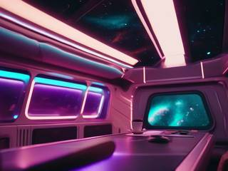
Open the game, pick a hideout on the chart, and the battle starts straight away. A battle fits a coffee break or two.
There's no clock on any turn, and the game saves after every one. Close it mid-battle and the grids are exactly as you left them, heat signatures and all.
Game modes
There's one mode: the Brume campaign, played against AI admirals. It nests neatly, so a session can stop at any level:
The chart of the BrumeAs long as you like: hideout after hideout.
A battleOne hideout, eight hulls a side, until one fleet has gone dark.
A roundEvery surviving ship fires once, smallest first.
A turnMove, use an item, fire.
Features and mechanics
The heart of it
The fleet rotation
Both fleets are the same eight ships, 45 cells in all. They fire one ship per turn, in a fixed order, from the smallest to the largest, and then the rotation starts again. A destroyed ship's turn is skipped, so losing your obliterator means losing its bomb for the rest of the battle.
Ship
Hull
Salvo
Corvettela Corvette
1×3
A line of 2 cells
Frigatela Frégate
1×4
A line of 3
Destroyerle Destroyer
1×5
A line of 4
Battleshiple Cuirassé
1×6
A line of 5
Gunshipla Canonnière
2×2
A V of 3: one cell and the two diagonally beside it
Cruiserle Croiseur
2×3
A small cross of 5
Dreadnoughtle Dreadnought
2×4
A large cross of 9: five across, two above and two below
Obliteratorl'Oblitérateur
3×3
A 3×3 square bomb
Because the order never changes, you always know what's coming, for you and for the enemy. The corvette's turn is for probing a suspicious corner; the obliterator's is for the spot you're nearly sure about. And when the enemy's obliterator is next, it's the moment to move your most damaged ship.
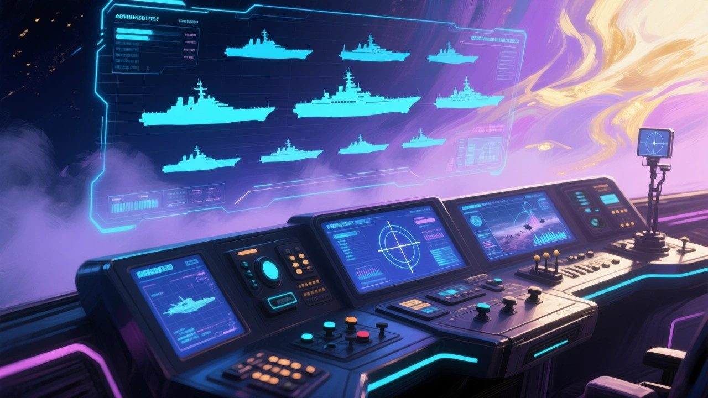
"Each turn, the next ship in line fires: the corvette first, the obliterator last, then round again."
Drag to aim
Salvos that wrap around
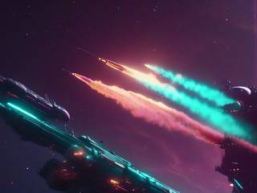
A salvo is laid down in one gesture: press on the first cell, drag toward a direction, release. The line salvos run from that cell in the direction you dragged, and the V points whichever way you pull it. The crosses and the square are the same every way round, so they fire where you click.
Missiles that would fly off the edge of the grid wrap around and land on the opposite side, like an old arcade screen. So no cell is ever out of reach, and a salvo fired near a border can probe two far corners at once.
Hidden until the end
Heat signatures and dark hulls
Every ship starts invisible. A hit doesn't reveal the ship. It only marks that one cell with a heat signature. You know something is there, but not which ship it is, which way it lies, or how much of it is left.
Only when a ship's last cell is hit does it give itself away: an explosion bursts from its center, and its greyed-out husk appears on the grid. A heat signature with no husk around it is the most interesting thing on the board: a wounded ship, still alive, somewhere next to it.
Electronic warfare
Probes, mines and smoke
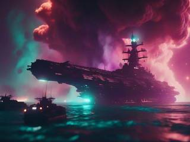
Each turn you can use one item, on either grid. Both fleets carry the same kit.
Sensor probe: dropped on the enemy grid, it reveals ships next to it, along a short line, in a small cross or within a radius, depending on the model. A ship can ram a probe to break it, at the cost of using its move.
Mine: dropped on the enemy grid, it damages any ship that moves onto it, which fences off part of their space for repositioning.
Smoke screen: laid on your own grid. The enemy can see the cloud, and it's wide, but whatever is under it stays hidden, even from probes, and for a few turns it masks the heat signatures of hits already taken.
So information is never one-way. A probe that finds a ship tells the enemy you know where it is, and smoke tells them where you think you need it.
Nothing stays put
Moving and mending
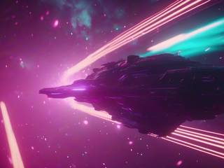
Once a turn, one ship can move to free cells: a short step to adjacent cells, a jump within a radius, or a warp anywhere on the grid, depending on what the kit holds. It can never move onto another ship, a mine or a hazard. A ship that has just been hit can be gone by the time the enemy comes back for it, and the heat signature stays behind as a decoy.
Repair items heal a wounded ship partly or fully, and the rarest of them brings a destroyed ship back. Some only mask the damage, hiding a wound's heat signatures without fixing it.
A fair opponent
An admiral who plays by your rules
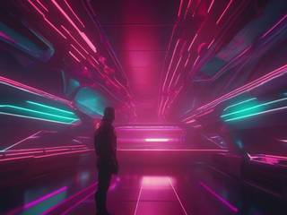
The enemy admiral never peeks at your grid. While it has no wounded ship of yours to chase, it fires from a random cell in a random direction, sweeping for contacts. Once one of its hits glows on a ship that's still alive, it switches to the hunt: it picks an untouched cell next to that hit and fires from there.
Knowing that is part of the game. A wounded ship moved away leaves the admiral hunting around an empty signature, and a smoke screen over the wound takes away its trail altogether.
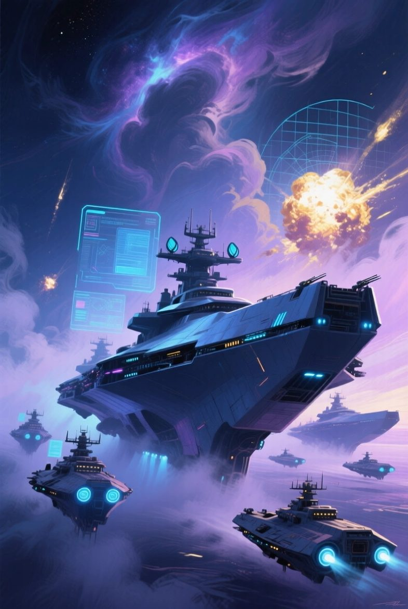
Ordre de mission
AAL Stealth Sector: Covert Battleship Wars
Admiral. Eight hulls are yours: a corvette, a frigate, a destroyer, a cuirassé, a gunship, a cruiser, a dreadnought and an obliterator. Somewhere in the Brume, a corsair has the same eight.
You won't see them. You'll see heat. Fire in order, move what's wounded, hide what matters, and follow every glow until the last hull goes dark.